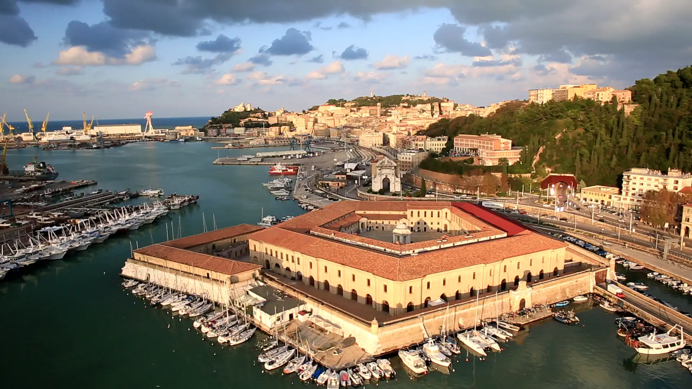
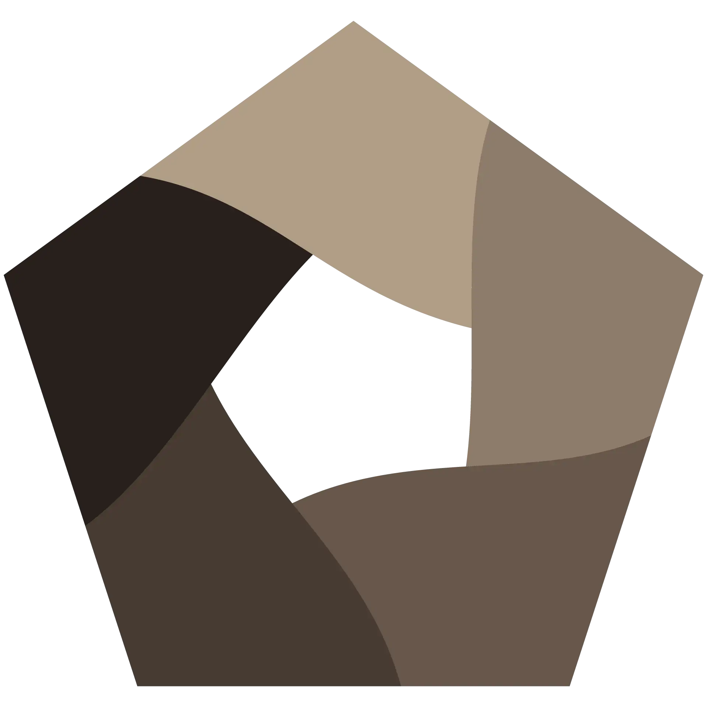
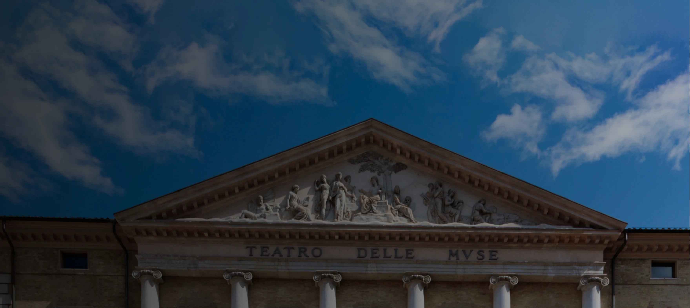
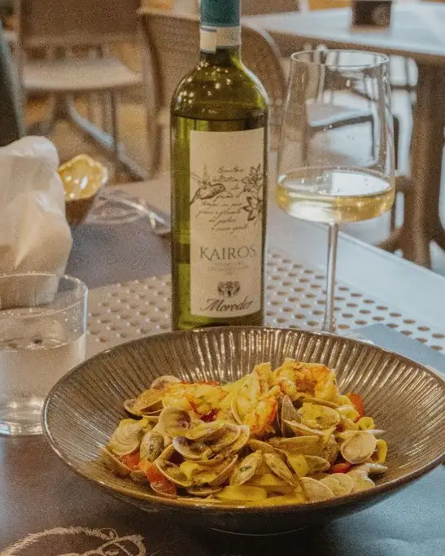
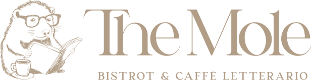
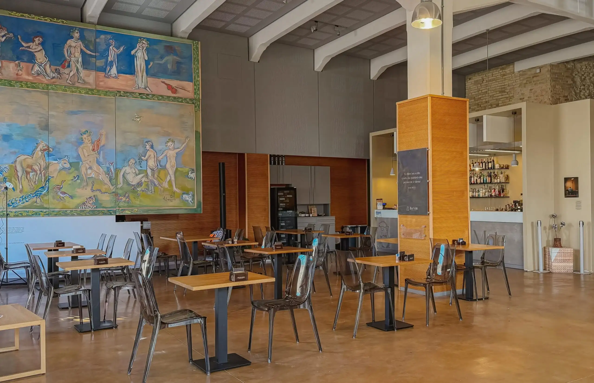
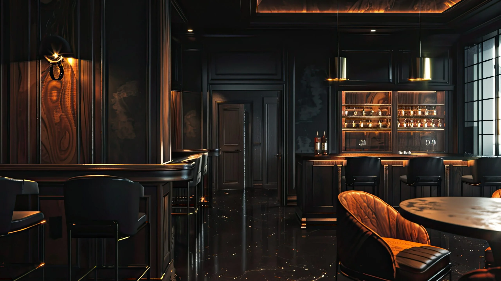

La vicinanza
Quando un prodotto nasce nelle Marche, lo cerchiamo qui.

Società Benefit · Ancona
Gestiamo luoghi dove Ancona si incontra: a tavola, tra i libri, a teatro e attorno a un bancone. Lo facciamo da società benefit, con gli impegni verso le persone, la città e l’ambiente scritti nel nostro statuto.
Chi siamo
Ankon Benefit Company, ABC, nasce ad Ancona nel dicembre 2023 da Marco Moroder e Alessia Santoni. Alle spalle c’è una famiglia che lega il proprio nome al Conero dal 1837; davanti, l’idea di portare in città lo stesso modo di fare impresa, partendo dal territorio.
Per farlo abbiamo scelto la forma della società benefit, prevista dalla legge italiana dal 2016. Accanto all’obiettivo di produrre utili, una società benefit si impegna pubblicamente a perseguire finalità di beneficio comune e ogni anno rende conto alla comunità di come lo fa. Per noi è il modo più onesto di dichiarare da che parte stiamo: chi entra in uno dei nostri locali può verificare cosa abbiamo promesso e cosa abbiamo fatto.
Misuriamo il nostro impatto con il B Impact Assessment, lo standard internazionale di B Lab, e su quella base lavoriamo per ottenere la certificazione B Corp.


Le nostre finalità
Come società benefit ci siamo impegnati a:
Per tradurre queste finalità nelle scelte di ogni giorno ci siamo dati un Codice Etico. Stabilisce come trattiamo le persone, come scegliamo i fornitori, come organizziamo il lavoro e gli eventi, come accogliamo e gestiamo le segnalazioni. Vale per chi guida l’azienda, per chi ci lavora e per chi collabora con noi, e lo trovi per intero tra i documenti in fondo alla pagina.
L’impegno per il tessuto socio-culturale

Quando abbiamo aperto The Mole, nell’ottobre 2024, il Foyer della Mole Vanvitelliana si animava solo in occasione di qualche evento. Oggi è aperto sei giorni su sette: chi entra per un caffè trova una libreria curata con uno spazio dedicato ai libri in libera consultazione, un coworking e un calendario che alterna presentazioni di libri, musica, incontri su architettura, cinema e design.
Al Teatro delle Muse, The MoUSE vive in tre spazi e segue il ritmo del teatro. Al piano terra, “Sfizi, Calici & Caffè” è aperto alla città dalla mattina fino al dopo cena, per una pausa o un aperitivo prima di tornare in strada. Nella Prima Galleria, il “Salotto del Foyer” accoglie il pubblico prima che si alzi il sipario, negli intervalli e dopo l’ultimo applauso. Con “Catering & Cucina contemporanea”, infine, firmiamo i menù degli eventi, pensati ogni volta come un pezzo unico.
Sono due dei luoghi più importanti di Ancona, a pochi passi l’uno dall’altro. Il nostro lavoro è farli vivere a chi abita la città, oltre che a chi la visita.
La cultura per noi passa anche dalle alleanze. Apriamo i nostri spazi ad associazioni e operatori culturali, creiamo e cerchiamo progetti da sostenere insieme ad altri.

Aperto 6 giorni su 7 nel Foyer Vanvitelliano: bistrot, libreria in libera consultazione, coworking e rassegne culturali.

Tre anime nel Teatro delle Muse: Sfizi, Calici & Caffè, Salotto del Foyer e Catering & Cucina contemporanea.
L’impegno per la salute e il benessere
La salute di lavoratori e clienti è una delle finalità del nostro statuto. Per chi lavora con noi partiamo dalle basi: rapporti di lavoro regolari, formazione su sicurezza e igiene, un affiancamento attento per chi è alla prima esperienza. Da qui stiamo costruendo un programma di welfare aziendale insieme ai nostri dipendenti, a partire da un questionario che raccoglie le loro esigenze, perché le misure che adotteremo rispondano a bisogni reali.
Per chi si siede ai nostri tavoli, la salute comincia in cucina: seguiamo una filiera di approvvigionamento strutturata il più possibile su produttori locali, che sappiano assicurarci ingredienti di stagione e soprattutto il rispetto di pratiche sostenibili; le stesse che orientano i nostri chef nella creazione di menù che sappiano raccontare le nostre scelte.
E passa anche dalla cultura. Con Apertamente, rassegna gratuita e aperta a tutti, portiamo la psicologia fuori dagli studi professionali e la facciamo entrare nella vita della città, come strumento di consapevolezza e di benessere.


L’impegno per l’ambiente
Il nostro approccio è plastic free: nel servizio quotidiano non usiamo plastica monouso e per i catering scegliamo solo materiali compostabili. Tovagliette, menù e locandine sono stampati su carta certificata PEFC, che proviene da foreste gestite in modo sostenibile, e compensiamo la CO2 emessa per produrla. A The Mole, parte della libreria è costruita con pannelli EcoBoards, ricavati dal riciclo di bottiglie in PET.
Nelle cucine dei nostri bistrot abbiamo rinunciato a griglie e friggitrici, a favore di preparazioni che consumano meno energia. Facciamo la raccolta differenziata in modo sistematico e serviamo acqua WAMI, una B Corp italiana come noi che per ogni bottiglia venduta dona 100 litri di acqua potabile a comunità che non vi hanno accesso.
L’impegno per il territorio
Ogni volta che possiamo scegliamo produttori del territorio, piccole realtà artigiane e persone che conosciamo per nome. Così le merci fanno meno strada e il valore che generiamo resta in circolo nelle Marche, accanto a chi lo produce.
Lo stesso criterio vale per il denaro. Le nostre banche principali sono Banca Etica, che finanzia solo progetti con un impatto sociale e ambientale positivo, e la BCC di Ancona e Falconara, una Banca di Credito Cooperativo radicata nel territorio marchigiano. Teniamo lo stesso criterio quando paghiamo: rispettiamo i termini concordati e diamo la precedenza ai piccoli produttori e alle piccole imprese, per i quali un ritardo pesa di più. Poi vengono gli altri.
Nelle scelte dei nostri fornitori preferiamo chi sa assicurarci un impegno uguale al nostro: acquistiamo elettricità da compagnie che lavorano su fonti rinnovabili certificate, chiediamo a chi ci rifornisce una totale trasparenza sul controllo di filiera e compriamo solamente materie prime per le preparazioni, nessun semi lavorato entra nelle nostre cucine.
Cerchiamo infine come compagni di strada altre società benefit e imprese certificate B Corp, insieme a tutte le realtà che condividono le nostre finalità: gli impegni presi in tanti si mantengono meglio.
I nostri partner
Ogni partner racconta qualcosa di noi, per questo lo scegliamo con gli stessi criteri con cui gestiamo i nostri locali:
I luoghi dell’incontro
Quattro indirizzi · Una sola visione ad Ancona
Bistrot, caffè letterario, sala da tè e coworking nel Foyer della Mole Vanvitelliana. Cucina di stagione con ingredienti biologici e del territorio e pescato locale, una libreria curata con Fogola e Ubik e un calendario di eventi che ha riportato la Mole nella vita quotidiana della città.
Dentro il Teatro delle Muse, in tre spazi: Sfizi, Calici & Caffè al piano terra, aperto alla città dalla mattina al dopo cena; il Salotto del Foyer nella Prima Galleria, per il pubblico del teatro; Catering & Cucina contemporanea per gli eventi.
Il nostro laboratorio di pasticceria, ispirato alla viennoiserie francese, è una vera eccellenza.
Il Conero nel nome, il barbecue americano preso sul serio: brisket, pastrami, pulled pork e ribs, affumicati con legno di ciliegio e noce americano in cotture lente che arrivano a diciotto ore. Gli hamburger sono fatti da noi, con carne di razza marchigiana. Lavoriamo i tagli con tecniche che chiedono tempo e precisione, per usare la materia prima al meglio e sprecarne il meno possibile, e cerchiamo di ridurre l’impatto di ogni passaggio, dalla cucina alla consegna. Solo asporto e delivery, con acqua WAMI anche qui.
Dal 2007 abita Piazza del Plebiscito ed è stato il primo tapas bar delle Marche, il luogo dal quale abbiamo diffuso una vera e propria cultura del cocktail. Per più di una generazione di anconetani è il posto dove la serata comincia, tra drink ricercati, tapas che cambiano spesso e musica. Anche qui abbiamo portato in cucina il nostro approccio zero sprechi.
Made in Ancona
La casa comune di ABC e della famiglia Moroder
Made in Ancona è la casa comune che riunisce i locali di ABC e le realtà della famiglia Moroder: la Cantina Moroder, che dal 1837 racconta il Conero attraverso i suoi vini e coltiva in biologico dagli inizi del 2000 dopo 30 anni di basso impatto ambientale in un Parco protetto, l’agriturismo Aiòn e la Pizzeria Aia. Il payoff, Made to gather, dice il senso di tutto il progetto: luoghi diversi, nati per far stare insieme le persone.
Accanto a noi c’è anche il Pescenario Fantastico, l’osteria pop del Mercato Maratta. Una collaborazione di ABC, che ne segue gli stessi principi, a partire da una cucina che trasforma ogni parte del pescato, ad oggi una delle filiere con più sprechi e sfruttamento delle risorse naturali, in una cucina innovativa e zero waste, lavorando il pesce in salumi, brodo, conserve.
Scrivici
Per collaborazioni culturali, fornitori o informazioni sulle attività di Ankon Benefit Company:
mail.abcsrl@gmail.com
Scrivici
Per collaborazioni culturali, fornitori o informazioni sulle attività di Ankon Benefit Company:
mail.abcsrl@gmail.com